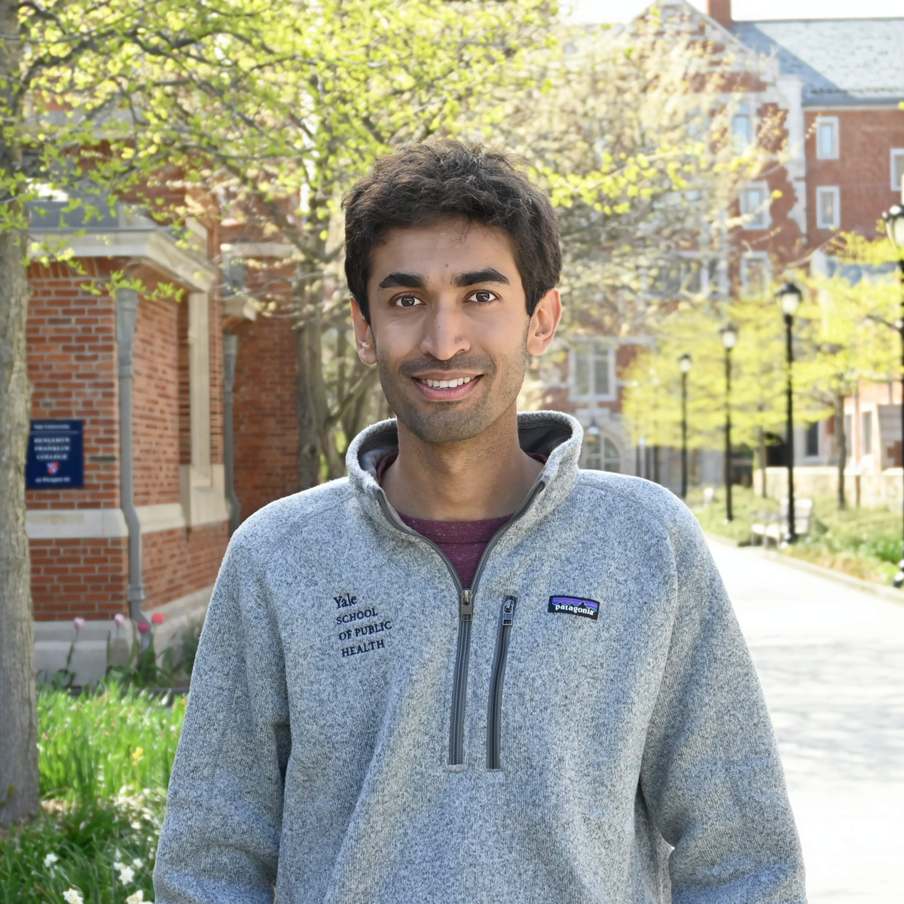

Data fusion & generalizability
Combining experimental and observational studies, assessing underrepresentation, and estimating effects across populations, time, and social networks.
Biostatistics · Yale University
Assistant Professor of Biostatistics
Yale School of Public Health
I develop causal inference methods to study how interventions affect people, and how evidence transfers across populations and settings.

The latest
New papers, acceptances,
and talks.
Lightning talk at the University of Michigan's Causal AI for Decision Making Workshop.
Proximal causal inference through cross-proxy balancing is available on arXiv.
Demystifying Prediction Powered Inference received provisional acceptance at the Harvard Data Science Review.
Controllable Generative Sandbox for Causal Inference was accepted as a poster.
Characterizing Underrepresentation in Generalizing Causal Survival Estimates was accepted as a poster.
The epidemiology of artificial intelligence was published in Nature Health.
Data (in)equities in data science was accepted by the Canadian Journal of Statistics.
About
I lead the Causal Evidence and Decisions Studio (CEADS) at Yale. We combine statistics and machine learning to estimate the effects of interventions, with particular attention to differences between study samples and the populations those interventions are intended to serve.
Our work connects methodological questions to problems in public health, medicine, economics, and ecology. Applications include the economic costs of illness, treatment decisions in critical care, and the effects of agriculture on forests in Madagascar.
I received my PhD in Computer Science from Duke University and completed a postdoctoral fellowship in Biostatistics at Johns Hopkins.
Full background and affiliationsResearch
Estimating causal effects when data are incomplete, populations differ, and decisions have consequences.
Combining experimental and observational studies, assessing underrepresentation, and estimating effects across populations, time, and social networks.
Developing matching methods, treatment rules, and approaches to extrapolation that make the relationship between data and causal estimates easier to examine.
Evaluating causal methods with controllable simulations and experimental benchmarks, and studying how design choices affect the evidence a study can produce.
Studying the social and economic effects of illness, bias in health data, the population effects of AI, and the relationship between livelihoods and biodiversity.
Publications
No papers match this search.
People
Members and affiliates of the Causal Evidence and Decisions Studio.


Teaching
Fall 2026 · Yale
Algorithmic thinking, prediction, and data visualization in public health, with practical work in Python.
Course websiteTutorial
Methods and principles for interpretable machine learning, with activities using real data.
Explore the tutorialContact
If you are interested in working with CEADS on causal inference, machine learning, or public health, please email me with your CV and a short description of your research interests.
I also maintain a job board for statistics, data science, and AI, with opportunities across institutions.